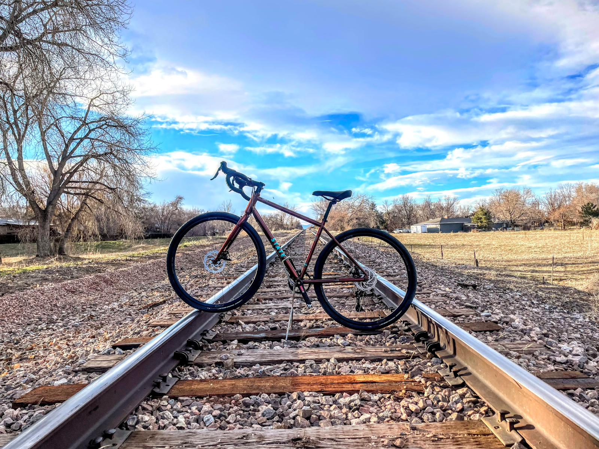

January 1, 2024
State Bicycle 4130 All-Road 700c Gravel Bike ($899)

I received a loaner State 4130 All-Road - a drop-bar steel gravel bike that costs just $900. It has clearance for big tires, lots of mounting options, and your choice of 650b or 700c wheels. I was curious how such an affordable bike would hold up in the real world, so I have been testing a 700c version for the last few weeks. Overall, I have been impressed with the 4130 All-Road. It’s a well-built bike that rides great on a variety of surfaces. The steel frame is comfortable and absorbs bumps well, and the gearing is wide enough to handle both climbs and flats. The brakes are also powerful and reliable.
Weather permitting, I have taken the State 4130 All-Road on everything from gravel road to bike path to singletrack trails, and it’s handled everything I’ve thrown at it with relative ease. It is a great entry-level gravel bike that offers good value for the price. The bike is made from a durable steel frame and fork, and it comes with a wide range of gears that make it easy to tackle hills and rough terrain. It also has clearance for wider tires, which allows for customizability and makes it more comfortable to ride on rough roads. However, there are a few drawbacks to the All-Road. It’s not as light as some other gravel bikes, and it doesn’t have as many features, such as a dropper post. It also doesn’t come with any accessories, such as fenders or a rack.
Pros
Affordable price
Durable steel frame and fork
Wide range of options for gearing
Clearance for wider tires
Bikepacking ready
Comfortable riding and fit
Cons
Heavy
With the affordable price point, I don’t know the relative durability
Doesn’t come with any accessories
Bike and Kit
This won’t surprise anyone: cycling is an expensive sport where gear and bikes can cost a fortune for most. Even entry-level bikes suitable for gravel riding and bikepacking can cost over $2,000. However, there are a few affordable options available, such as the Salsa Journeyman, the Poseidon Redwood, and the State Bicycle Company 4130 All-Road. These bikes are built with affordable components but still have features that are important for bikepackers and gravel riders, such as clearance for wide tires and mounting points for racks and bags. While these bikes may not be as high-end as some of the more expensive options, they are still a great way to get into riding and even bikepacking.
The 4130 All-Road components are well-suited for its price range. The Vittoria Terreno Zero 38c (Tubeless) tires and All-Road wheels are a good choice for mixed terrain riding, and the 700 x 38mm build provides a good balance of speed and comfort. The All-Road handlebar has a comfortable 18° flare and shallow drop, which makes it good for both on- and off-road riding. However, the stock bar tape is quite thin and does not cover enough of the bar to provide much comfort. Overall, the components are a good starting point, but some riders may want to upgrade the bar tape and stem to suit their individual needs.

State offers a complete 1x11 drivetrain for its All-Road bike. The kit includes a 1x crank in your choice of 165, 170, or 175mm lengths with a 42t narrow-wide chainring, which is compatible with standard 110 BCD cranks. State also sells its All-Road 1 chainrings in 38, 40, 42, and 44t. The drivetrain functioned smoothly, but the 42t front chainring and 11-42t cassette may be too much of a push for those who live in hilly areas. The bike’s 26 lb weight can also make climbing hills slower. The rear derailleur struggled to stay in position at times, which made me nervous when shifting quickly under load on uphills. It could have been due to my slipshod adjustment prior to the ride, because it didn’t really happen again, but I was also really careful to shift only when necessary and at the best time during my pedal stroke.


The 4130 steel frame is offered in several colors, and includes a matching steel fork. Both the frame and fork have clearance for 700c x 45mm or 650b x 50mm tires, which makes the All-Road a versatile bike that can be used for a variety of purposes, including bikepacking. The frame also has a number of braze-ons, which can be used to mount racks, fenders, bottle cages, and cargo options. This makes the All-Road a great choice for riders who want a bike that can be customized to fit their needs. The cable routing is kept simple with full external routing guided through bolt-on clamps along the downtube. This makes it easy to maintain the bike and makes it less likely that the cables will get tangled. For long haul security, the frame and fork both include 12mm thru axles and flat mount brakes. This makes the All-Road a capable bike for long rides and adventures.


Fit and Ride
One of the things I like most about the 4130 All-Road is its comfortable riding position. The bike has a relatively upright geometry, which makes it easy to see what’s going on around you. The handlebars are also wide and swept back, which provides a comfortable grip. This makes it a great choice for long rides, as you won’t get as tired as you would on a bike with a more aggressive riding position. It is comfortable and offers a stable ride. Despite being a steel frame, the bike is reasonably light, making it easy to maneuver. And the steel provides some dampening compliance on bumpy roads and trails. The bike has a relatively long wheelbase, which also makes it stable at higher speeds.
Another thing I like about the 4130 All-Road is its versatility. The bike can be used for a variety of purposes, including commuting, touring, and even light off-road riding. The bike comes with a wide range of gears, which makes it easy to tackle hills and rough terrain. It also has clearance for wider tires, which makes it more comfortable to ride on rough roads. This makes it a great choice for riders who want a bike that can do it all.
Overall, the 4130 All-Road is a great choice for riders who are looking for a comfortable, versatile, and capable bike. It’s perfect for everyday riding, as well as longer adventures.


Conclusion
Ultimately, the best bike for gravel riding and/or bikepacking is the one that fits your budget and needs. If you’re on a tight budget, the All-Road would be a great option. If you have a little more money to spend, you could also consider a higher-end bike with more features. Needless to say, the State Bicycle Company 4130 All-Road is a great choice for riders who are looking for an affordable, durable, versatile, and comfortable gravel bike. It’s a great all-around bike that can handle a variety of terrain.
-
Affordability. It is one of the most affordable gravel bikes on the market. It’s priced significantly lower than other bikes with similar features and components.
-
Durability of Steel. The 4130 All-Road is made from a durable steel frame and fork. This makes it a great choice for riders who are looking for a bike that can withstand and enjoy the rigors of off-road riding.
-
Versatility. The 4130 All-Road is a versatile bike that can be used for a variety of purposes, including commuting, touring, and even light off-road riding.
-
Comfort. The 4130 All-Road is a comfortable bike to ride. It has a relatively upright geometry, terrain dampening steel frame, and a wide range of gears, which makes it easy to tackle hills and rough terrain.
-
Style. The 4130 All-Road is a stylish bike that is sure to turn heads. It comes in a variety of colors and styles to choose from.
Ride - 8/10 (surprisingly light feeling even though it is steel,
stable, and compliant on the bumpy stuff)
Fit - 8.5/10 (I made only minor adjustments after finding the right
saddle height)
Specs - 7.5/10 (decent house brand components, which is a bonus to
keep the price down)
Fun Factor (out of 5) - 🙌 🙌 🙌 🙌
Overall Average: 8 / 10
Thanks for reading Boulder Gear Lab! Subscribe for free to receive new posts and support my work.